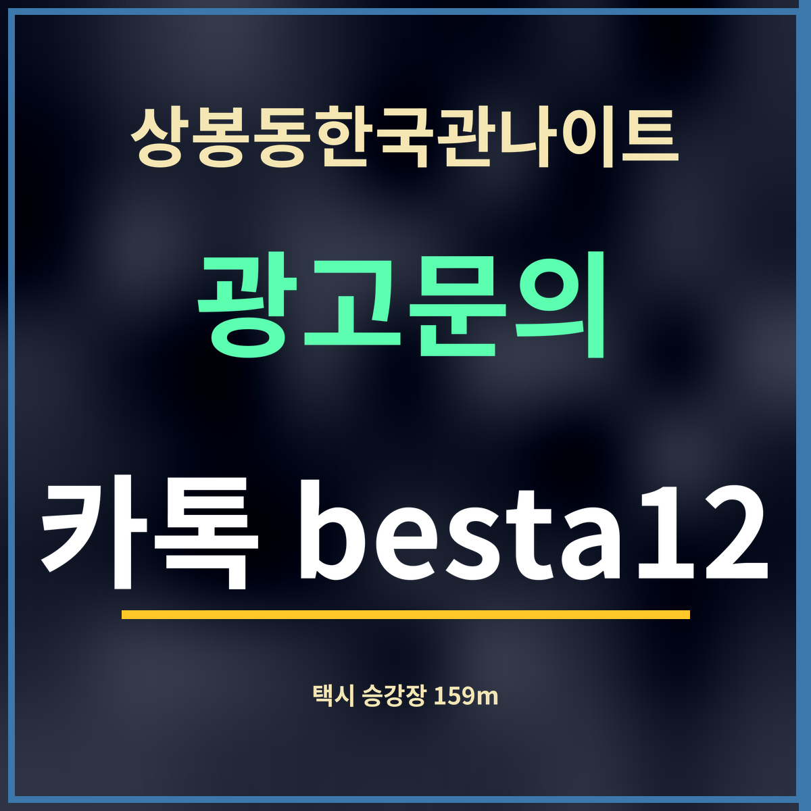

19세 미만 출입 금지
상봉동한국관나이트 귀갓길 택시, 승강장까지 159m
제휴 없는 정보 안내 · 승강장 두 곳은 카카오맵 지도에 「택시」로 분류된 자리입니다(9월 27일 검색). 걷는 길은 표의 직선보다 조금 멉니다.

바로 답: 상봉동한국관나이트에서 가장 가까운 택시 승강장은 상봉동 81, 직선 159m입니다. 그 다음은 망우역 택시승강장(상봉동 72-8) 412m입니다.
승강장 두 곳
| 이름 | 주소 | 직선거리 |
|---|---|---|
| 택시승강장 | 상봉동 81 | 159m |
| 망우역 택시승강장 | 상봉동 72-8 | 412m |
승강장에서 타면 좋은 까닭
새벽에는 길가에서 손을 들어도 빈 차가 그냥 지나가거나, 차를 세우기 어려운 자리여서 멈추지 못하는 일이 생깁니다. 승강장은 택시가 서서 손님을 태우도록 정해 둔 자리라, 기다리는 차례가 분명하고 차도 안전하게 섭니다.
문 닫는 아침 6시 전후는 한꺼번에 사람이 나오는 때입니다. 159m 승강장에 줄이 길면 412m 떨어진 망우역 쪽으로 옮기는 방법도 있습니다. 호출 앱을 쓸 때도 승강장처럼 차가 설 수 있는 자리를 출발지로 찍으면 기사님이 찾기 쉽습니다. 일행이 여럿이면 한 사람이 먼저 승강장에 가서 줄을 서 두는 것도 방법입니다.
술을 마셨다면 차를 두고 가는 것이 먼저입니다. 가게 주차장은 카카오맵에 무료 주차로 표시되어 있으니, 둔 차는 다음 날 맑은 정신으로 가져가세요.
승강장 말고 다른 길
택시가 잘 안 잡히는 날에는 문 닫는 시각에 맞춰 지하철을 보는 것도 방법입니다. 상봉역은 가게에서 걸어서 5분쯤(2번 출구 271m · 카카오맵) 거리이고, 7호선 · 경의중앙선 · 경춘선이 섭니다. 행선지가 가깝다면 따릉이나 걷기도 생각해 볼 수 있습니다.
자주 묻는 것
상봉동 81의 택시승강장으로 직선 159m입니다.
망우역 택시승강장(상봉동 72-8)으로 직선 412m입니다.
행선지마다 달라 적지 않았습니다. 호출 앱의 예상 요금을 참고하세요.
한 줄 정리: 상봉동한국관나이트에서 택시는 159m 상봉동 81 승강장, 붐비면 412m 망우역 승강장입니다.
영업이 끝나는 시각은 이번 주 영업시간에서 보세요.